13 Graphiques simples
13.1 plot
Le premier type de graphique que nous allons voir est le nuage de points. Dans un nuage de points, chaque point est représenté par sa valeur en x et en y. La fonction permettant de faire un nuage de points est plot().
myX <- rnorm(50, mean = 0, sd = 1)
myY <- rnorm(50, mean = 10, sd = 1)
plot(x = myX, y = myY)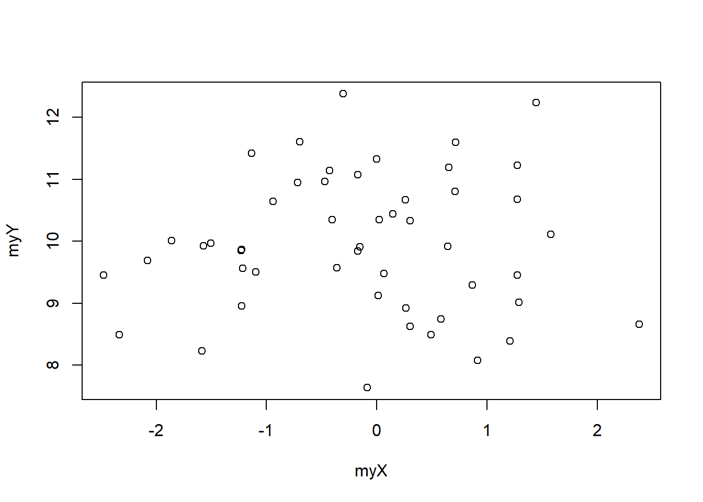
Comme pour tous les types de graphiques, nous pouvons ajouter une légende sur l’axe des x et des y.
plot(x = myX, y = myY,
xlab = "X", ylab = "Y")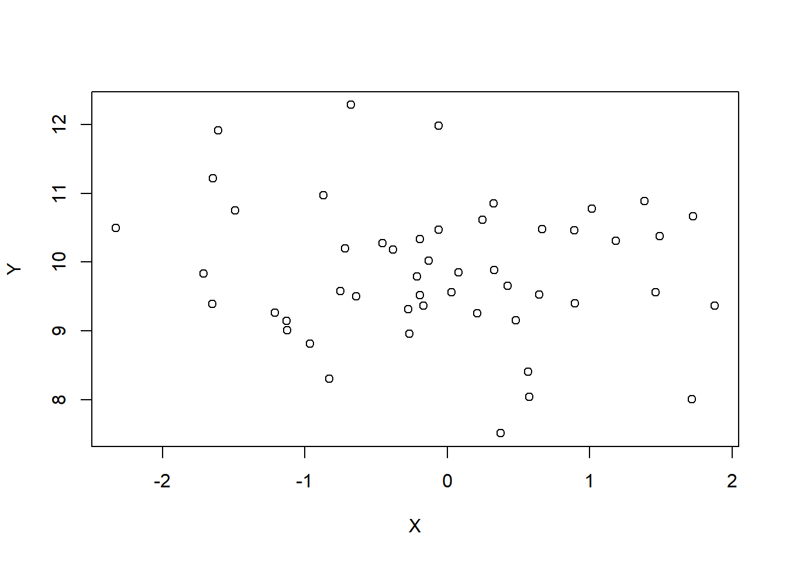
Nous pouvons aussi définir les limites des axes en X et en Y.
plot(x = myX, y = myY,
xlab = "X", ylab = "Y",
xlim = c(-3, 3), ylim = c(7, 13))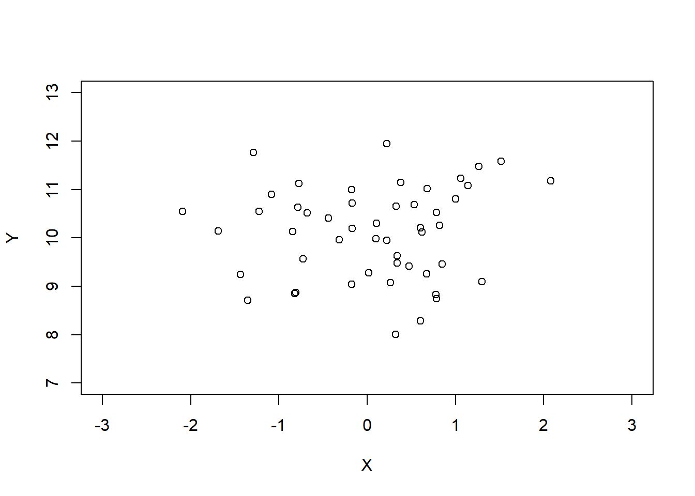
Le type de point peut être défini avec l’argument pch qui peut prendre un caractère ou un chiffre de 1 à 25.
plot(x = rep(seq(1:5), 5), y = rep(seq(1:5), each = 5),
pch = 1:25)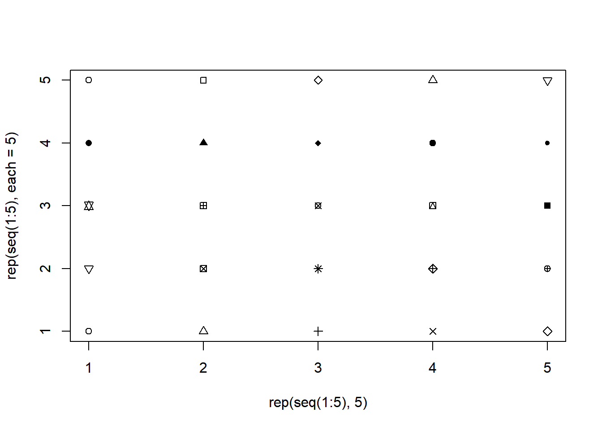
plot(x = myX, y = myY,
pch = c("a", "@", "#", "1", "=", "-", "_", "o", "O", "0", letters[1:15]))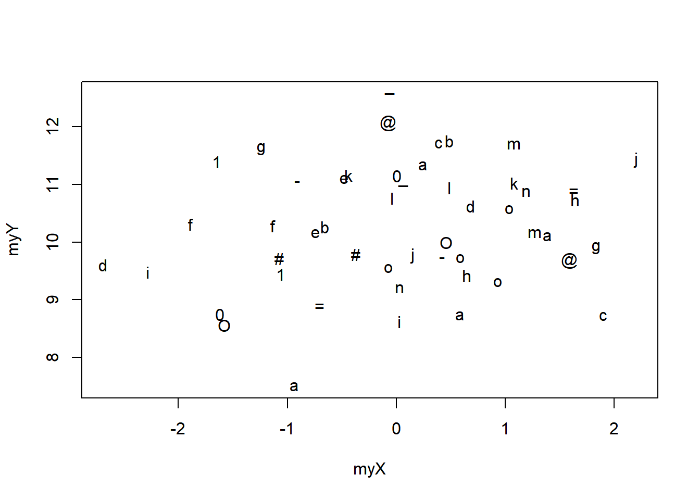
La taille des points peut se définir avec l’argument cex.
plot(x = myX, y = myY,
cex = seq(from = 0.5, to = 3, length.out = 50))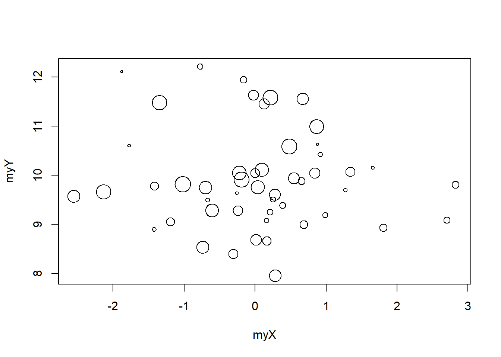
La couleur des points peut se définir avec l’argument col. Nous reviendrons sur les couleurs dans un prochain chapitre.
myX <- rnorm(100, mean = 0, sd = 1)
myY <- rnorm(100, mean = 10, sd = 1)
plot(x = myX, y = myY,
cex = seq(from = 0.5, to = 3, length.out = 100),
pch = 16,
col = sample(colors(), 100))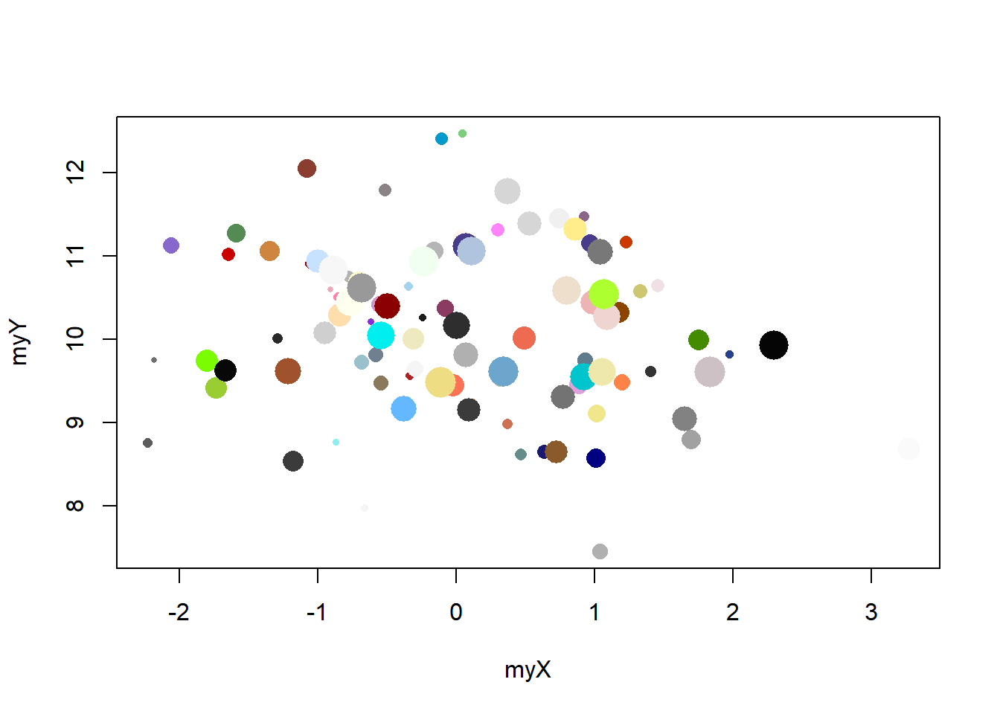
Pour représenter nos points la couleur et la taille des points peuvent représenter des informations complémentaires. Ici nous allons représenter par un gradient de taille la variable myY et par un gradient de couleur la variable myX.
myX <- rnorm(100)
myY <- rnorm(100)
dfGraph <- data.frame(myX, myY)
dfGraph <- dfGraph[order(dfGraph$myX),]
dfGraph$myCol <- colorRampPalette(c("blue", "red"))(100)
dfGraph <- dfGraph[order(dfGraph$myY),]
dfGraph$myCex <- seq(from = 0.5, to = 3, length.out = 100)
plot(x = dfGraph$myX, y = dfGraph$myY,
cex = dfGraph$myCex, pch = 16, col = dfGraph$myCol,
xlab = "", ylab = "")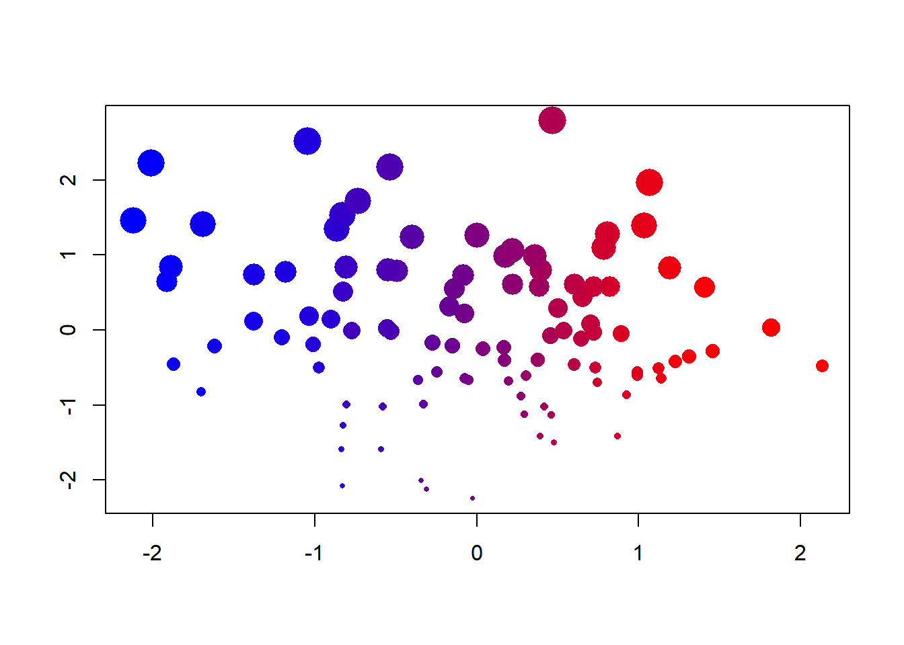
R offre la possibilité de relier les points des nuages de points de différentes façons. Les différentes options sont disponibles dans l’aide de la fonction plot() et plot.default().
myX <- 1:20
myY <- rnorm(20, mean = 10, sd = 1)
plot(x = myX, y = myY,
type = 'b') # 'p', 'l', 'b', 'c', 'o', 'h', 's', 'S', 'n'
Une dernière option très utile est l’argument panel.first qui permet de réaliser une opération graphique sur une couche située en dessous de notre graphique. Voici un exemple illustratif avec une grille réalisée avec et sans panel.first. La grille se fait grâce à la fonction grid(). Pour mettre les graphiques côte à côte nous allons utiliser mfrow.
par(mfrow = c(1, 2))
plot(x = myX, y = myY,
type = 'b', pch = 16, cex = 3)
grid(lwd = 3, lty = 1)
plot(x = myX, y = myY,
type = 'b', pch = 16, cex = 3,
panel.first = grid(lwd = 3, lty = 1)) 
par(mfrow = c(1, 1))La fonction par() permet d’accéder aux paramètres graphiques. Parmi ces paramètres il y a mfrow qui permet de diviser l’espace graphique comme une matrice. mfrow prend comme arguments un vecteur numérique de taille 2 : le premier élément correspond au nombre de lignes et le deuxième élément au nombre de colonnes. Le paramètre mar permet de contrôler les marges en bas, à gauche, en haut et à droite, respectivement, au moyen d’un vecteur numérique de taille 4. Après avoir modifié les paramètres graphiques par défaut il est recommandé de les réinitialiser pour que cela n’affecte pas les graphiques à venir. Les valeurs par défaut de mfrow sont c(1, 1) et mar = c(4, 4, 4, 4). Nous pouvons remettre ces valeurs par défaut comme ci-dessus en redéfinissant chacun des paramètres. Nous pouvons également enregistrer au préalable les valeurs courantes (dans un objet op), puis les modifier pour les besoins de nos graphiques, puis ensuite rappeler les valeurs contenues dans l’objet op. Ici nous utilisons lapply pour réaliser rapidement quatre graphiques.
op <- par(no.readonly = TRUE)
par(mfrow = c(2, 2), mar = c(2, 2, 1, 1))
graph4 <- lapply(1:4, function(i){
plot(x = rnorm(100),
y = rnorm(100),
col = i, pch = 16)
})
par(op)Il est souvent utile de faire figurer des lignes verticales ou horizontales pour représenter des valeurs particulières. Ces lignes peuvent être ajoutées avec la fonction abline().
myX <- rnorm(100)
myY <- rnorm(100)
plot(x = myX, y = myY,
xlim = c(-4, 4), ylim = c(-4, 4),
pch = 16, cex = 1.5,
col = sample(colors(), size = 100),
panel.first = {
grid()
abline(v = c(min(myX), max(myX)), lty = 2)
abline(h = c(min(myY), max(myY)), lty = 2)
abline(v = mean(myX), lty = 1)
abline(h = mean(myY), lty = 1)
})
13.2 hist
Pour faire un histogramme nous utilisons la fonction hist(). C’est une fonction graphique utile pour visualiser rapidement la distribution d’un jeu de données.
op <- par(no.readonly = TRUE)
par(mfrow = c(2, 2), mar = c(2, 2, 1, 1))
myX <- list(
rnorm(1000),
rgamma(1000, shape = 1),
sample(1:100, size = 1000, replace = TRUE),
rbeta(1000, shape1 = 1, shape2 = 2)
)
myTitle <- c("Normal", "Gamma", "Uniform", "Beta")
tr <- lapply(1:4, function(i){
hist(myX[[i]],
col = heat.colors(15),
main = myTitle[i]
)
})
par(op)13.3 barplot
Le graphique en barres se fait au moyen de la fonction barplot().
myX <- c(4, 5, 8)
barplot(myX, names.arg = c("A", "B", "C"))
Quand l’objet envoyé à cette fonction est un vector alors la fonction barplot() renvoie un graphique en barres simples. Quand c’est une matrix alors les barres sont multiples.
op <- par(no.readonly = TRUE)
par(mfrow = c(1, 2), mar = c(2, 2, 1, 1))
myX <- matrix(c(4, 5, 8, 4, 6, 2), nrow = 2)
barplot(myX, names.arg = c("A", "B", "C"))
myX <- matrix(c(4, 5, 8, 4, 6, 2, 3, 4, 5), nrow = 3)
barplot(myX, names.arg = c("A", "B", "C"))
par(op)La fonction barplot() peut aussi être utilisée pour représenter l’équivalent d’un histogramme. Cela peut être utile pour représenter la distribution d’une variable en fonction de l’axe des abscisses et l’axe des ordonnées. Dans l’exemple qui suit nous avons n points tirés au hasard dans une loi normale de paramètres mean = 0 et sd = 1 (myX <- rnorm(n)). Ces points sont soit représentés en bleu, soit représentés en rouge (la couleur bleue est codée avec la valeur 4 et la couleur rouge avec la valeur 2, nous en reparlerons dans un prochain chapitre). Le tirage au hasard de la couleur se fait avec la fonction sample() (myCol <- sample(c(4, 2), size = n, replace = TRUE)). Ici nous voulons représenter un nuage de points avec les points en rouge ou en bleu, puis pour l’axe des abscisses et l’axe des ordonnées, des histogrammes pour voir la répartition des points et un gradient de couleur du bleu au rouge en fonction de la proportion des points de couleur dans chaque catégorie. Le gradient de couleur avec 100 valeurs entre bleu et rouge se réalise avec la fonction colorRampPalette() (myColors <- colorRampPalette(c("blue", "red"))(100)).
Pour faire l’histogramme nous allons découper les données avec la fonction cut() en spécifiant que nous souhaitons des séparations faites entre -4 et 4 par pas de 1 (myYCut <- cut(myY, breaks = -4:4)). Pour avoir le compte du nombre de points dans chacune des catégories et pour chaque couleur il nous suffit d’utiliser la fonction table() (myYCutCol <- table(myCol, myYCut)). Dans cette table la première ligne correspond à la première couleur rencontrée dans le jeu de données et la deuxième ligne à l’autre couleur. C’est pourquoi il nous faut modifier le tirage aléatoire des couleurs pour que la première ligne corresponde toujours au bleu et la deuxième ligne au rouge : myCol <- c(2, sample(c(4, 2), size = (n - 1), replace = TRUE)).
Ensuite nous pouvons calculer la proportion de rouge en divisant la première ligne par la somme des deux lignes que nous allons représenter en pourcentage en multipliant par 100 : myXCutCol[1,] / (myXCutCol[1,] + myXCutCol[2,]) * 100. Pour que ce chiffre corresponde à une couleur nous n’allons conserver que sa partie entière avec la fonction round(). Si le pourcentage est de zéro ou si le résultat n’est pas possible du fait d’une division par zéro alors il nous faut le remplacer par 1 afin que cela corresponde à une couleur dans notre gradient qui va de 1 à 100 (xCol[is.na(xCol) | xCol == 0] <- 1).
Il ne nous reste plus qu’à organiser l’espace graphique avec la fonction layout() qui prend comme argument une matrice dont les valeurs et leur position vont correspondre à l’agencement des différents graphiques que nous souhaitons réaliser. Le graphique 1 correspond au barplot du haut, le graphique 2 au nuage de points et le graphique 3 au barplot de droite.
n <- 50
myX <- rnorm(n)
myY <- rnorm(n)
myCol <- c(2, sample(c(4, 2), size = (n - 1), replace = TRUE))
myColors <- colorRampPalette(c("blue", "red"))(100)
myYCut <- cut(myY, breaks = -4:4)
myXCut <- cut(myX, breaks = -4:4)
myYCutCol <- table(myCol, myYCut)
myXCutCol <- table(myCol, myXCut)
xCol <- round(
myXCutCol[1,] / (myXCutCol[1,] + myXCutCol[2,]) * 100
)
xCol[is.na(xCol) | xCol == 0] <- 1
yCol <- round(
myYCutCol[1,] / (myYCutCol[1,] + myYCutCol[2,]) * 100
)
yCol[is.na(yCol) | yCol == 0] <- 1
op <- par(no.readonly = TRUE)
par(mar = c(2, 3, 1, 1))
layout(matrix(c(1, 1, 0,
2, 2, 3,
2, 2, 3), ncol = 3, byrow = TRUE))
barplot(table(myXCut), las = 1, col = myColors[xCol])
plot(x = myX, y = myY, col = myCol, pch = 16,
xlim = c(-4, 4), ylim = c(-4, 4), cex = 1.5,
panel.first = grid())
barplot(table(myYCut), las = 1, horiz = TRUE, col = myColors[yCol])
par(op)Nous pouvons ensuite intégrer ce script dans une fonction pour par exemple étudier l’effet de la variable n.
graphBarplotCol <- function(n){
myX <- rnorm(n)
myY <- rnorm(n)
myCol <- c(2, sample(c(4, 2), size = (n - 1), replace = TRUE))
myColors <- colorRampPalette(c("blue", "red"))(100)
myYCut <- cut(myY, breaks = -4:4)
myXCut <- cut(myX, breaks = -4:4)
myYCutCol <- table(myCol, myYCut)
myXCutCol <- table(myCol, myXCut)
xCol <- round(
myXCutCol[1,] / (myXCutCol[1,] + myXCutCol[2,]) * 100
)
xCol[is.na(xCol) | xCol == 0] <- 1
yCol <- round(
myYCutCol[1,] / (myYCutCol[1,] + myYCutCol[2,]) * 100
)
yCol[is.na(yCol) | yCol == 0] <- 1
op <- par(no.readonly = TRUE)
par(mar = c(2, 3, 1, 1))
layout(matrix(c(1, 1, 0,
2, 2, 3,
2, 2, 3), ncol = 3, byrow = TRUE))
barplot(table(myXCut), las = 1, col = myColors[xCol])
plot(x = myX, y = myY, col = myCol, pch = 16,
xlim = c(-4, 4), ylim = c(-4, 4), cex = 1.5,
panel.first = grid())
barplot(table(myYCut), las = 1, horiz = TRUE, col = myColors[yCol])
par(op)
}
graphBarplotCol(n = 1000)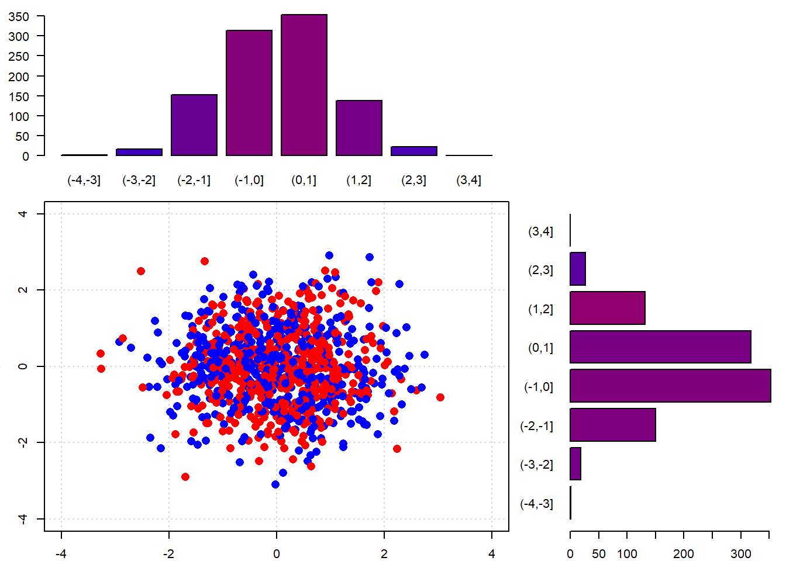
Un barplot peut bien sûr prendre des valeurs positives ou négatives.
barplot(rnorm(20), horiz = TRUE, col = rainbow(20))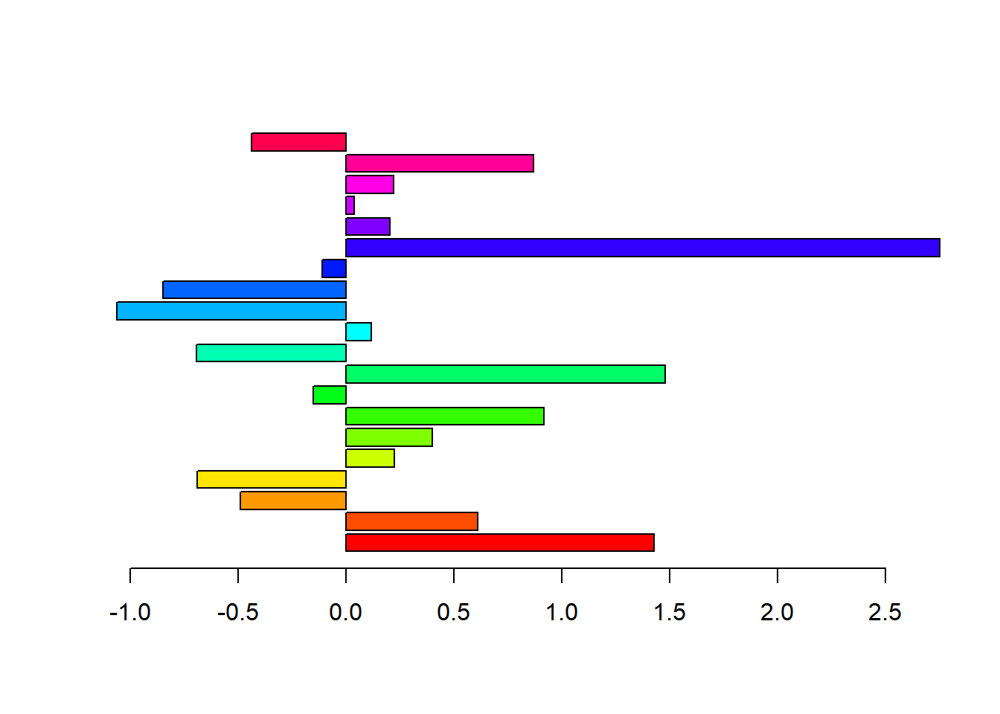
Le barplot peut aussi être utilisé pour faire une pyramide des âges (il existe des fonctions pour réaliser des pyramides des âges, ici l’objectif est pédagogique).
gender <- data.frame(
m = cut(sample(1:75, 1000, replace = TRUE),
breaks = seq(from = 0, to = 80, by = 10)),
f = cut(sample(1:75, 1000, replace = TRUE),
breaks = seq(from = 0, to = 80, by = 10))
)
op <- par(no.readonly = TRUE)
par(mfrow = c(1, 2), mar = c(2, 1, 2, 1))
barplot(-table(gender$f), horiz = TRUE, col = "salmon")
barplot(table(gender$m), horiz = TRUE, col = "lightblue")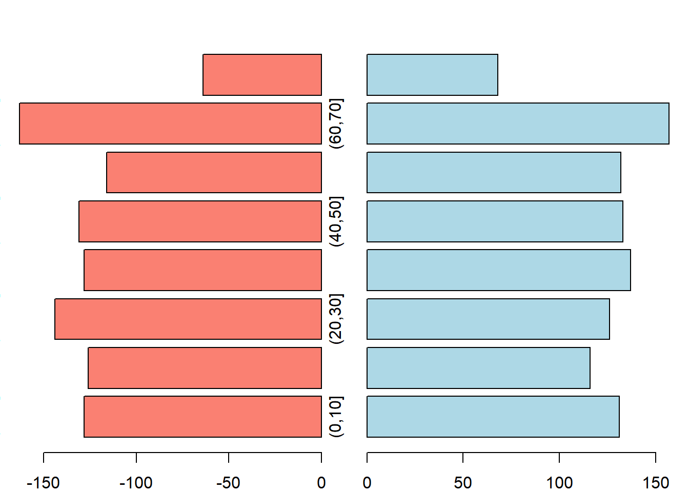
par(op)13.4 boxplot
Les boxplot ou boîtes à moustache sont des graphiques très courant avec R car ils donnent un bon apperçu d’un jeu de données en représentant les valeurs extrèmes (“outliers”), la médiane, les quartiles, les minimums et les maximums.
La fonction boxplot() s’applique à un ou plusieurs vector.
df <- data.frame(
box1 = rnorm(1000),
box2 = rgamma(1000, shape = 1),
box3 = sample(-3:3, size = 1000, replace = TRUE),
box4 = rbeta(1000, shape1 = 1, shape2 = 2)
)
boxplot(df, col = c(rgb(0, 94, 255, maxColorValue = 255),
rgb(255, 0, 174, maxColorValue = 255),
rgb(255, 136, 0, maxColorValue = 255),
rgb(119, 255, 0, maxColorValue = 255)))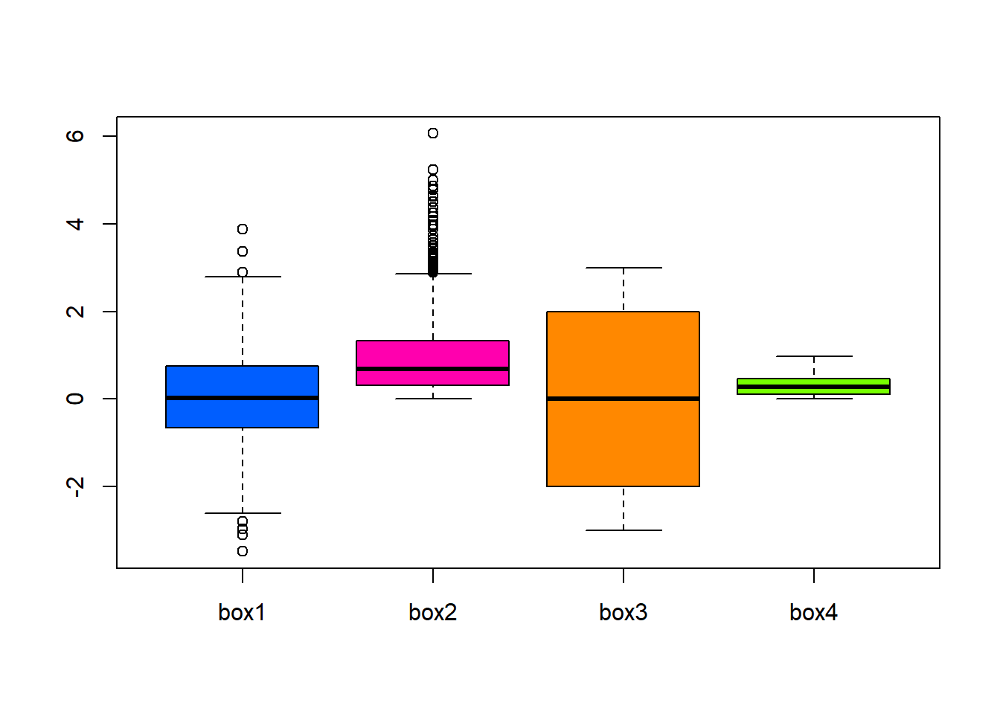
Si une variable est de type factor, la fonction boxplot() permet facilement de représenter chaque catégorie. Cela fonctionne aussi avec les variables numériques mais il faut veiller à ne pas avoir trop de valeurs différentes pour que le graphique reste lisible.
df$cat <- sample(c("w", "x", "y", "z"), size = 1000, replace = TRUE)
boxplot(df$box3 ~ df$cat, col = c(rgb(0, 94, 255, maxColorValue = 255),
rgb(255, 0, 174, maxColorValue = 255),
rgb(255, 136, 0, maxColorValue = 255),
rgb(119, 255, 0, maxColorValue = 255)), ylab = "Box3")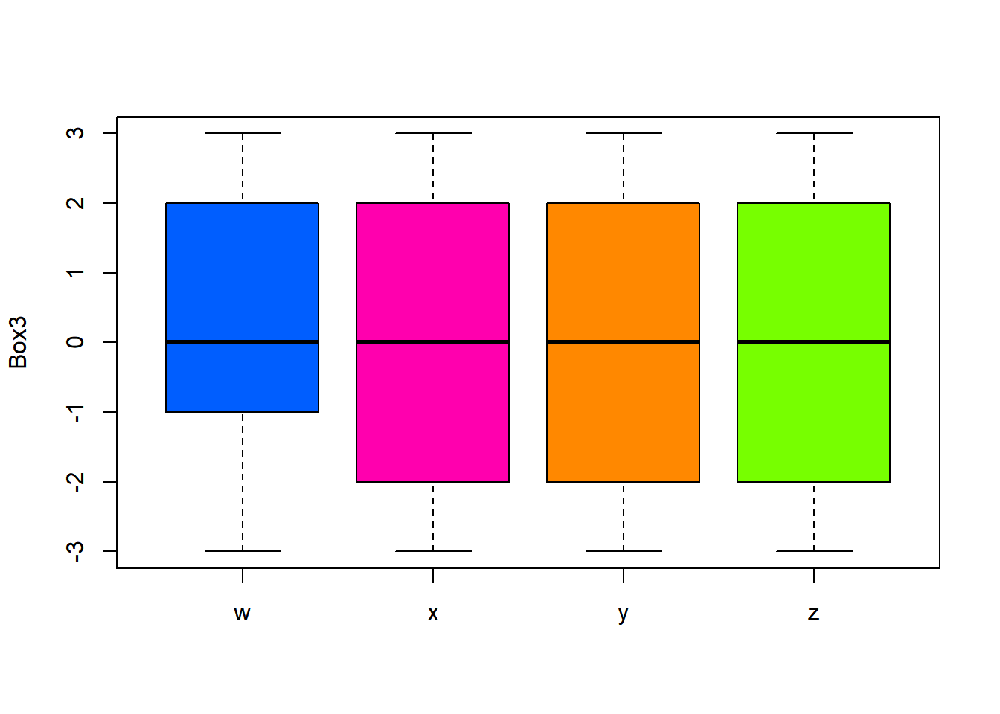
df$cat2 <- sample(1:3, size = 1000, replace = TRUE)
boxplot(df$box4 ~ df$cat*df$cat2, col = c(
rgb(0, 94, 255, maxColorValue = 255),
rgb(255, 0, 174, maxColorValue = 255),
rgb(255, 136, 0, maxColorValue = 255),
rgb(119, 255, 0, maxColorValue = 255)), ylab = "Box4")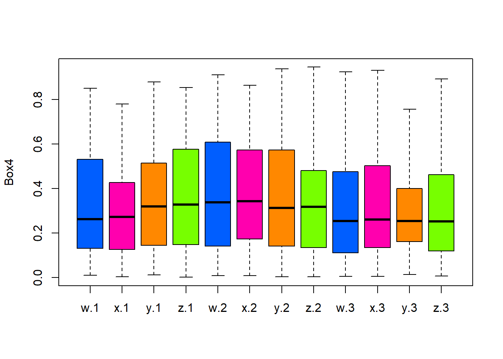
Le boxplot peut être représenté horizontalement ou verticalement.
df$cat <- sample(c("w", "x", "y", "z"), size = 1000, replace = TRUE)
boxplot(df$box2 ~ df$cat, horizontal = TRUE,
col = c(rgb(255, 110, 0, maxColorValue = 255),
rgb(230, 255, 0, maxColorValue = 255),
rgb(0, 178, 255, maxColorValue = 255),
rgb(166, 0, 255, maxColorValue = 255)), xlab = "Box2")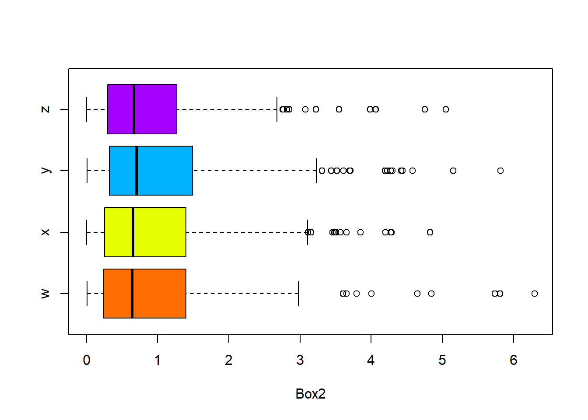
13.5 Autres graphiques
Il existe de nombreux autres graphiques mais ceux que nous venons de voir constituent la base. Pour plus d’information et d’idées pour représenter vos données nous pouvons consulter le très beau site https://www.data-to-viz.com/ ou encore la gallerie de graphiques R https://www.r-graph-gallery.com/ (en anglais ; la plupart des graphiques sont réalisés avec le package ggplot2 que nous verrons plus tard). Pour plus d’idées vous pouvez aussi utiliser la demonstration du package graphics en utilisant la commande demo("graphics") (la touche “Entrée” permet d’afficher les graphiques).
13.6 Conclusion
Félicitations, nous sommes arrivés à la fin de ce chapitre sur les graphiques simples ! Nous savons désormais réaliser les principaux graphiques plot(), hist(), barplot(), et boxplot(). Tout au long de ce chapitre nous avons utilisé différentes couleurs et différentes façons de représenter les couleurs : il est temps de formaliser l’utilisation et la gestion des couleurs. C’est le sujet du prochain chapitre !